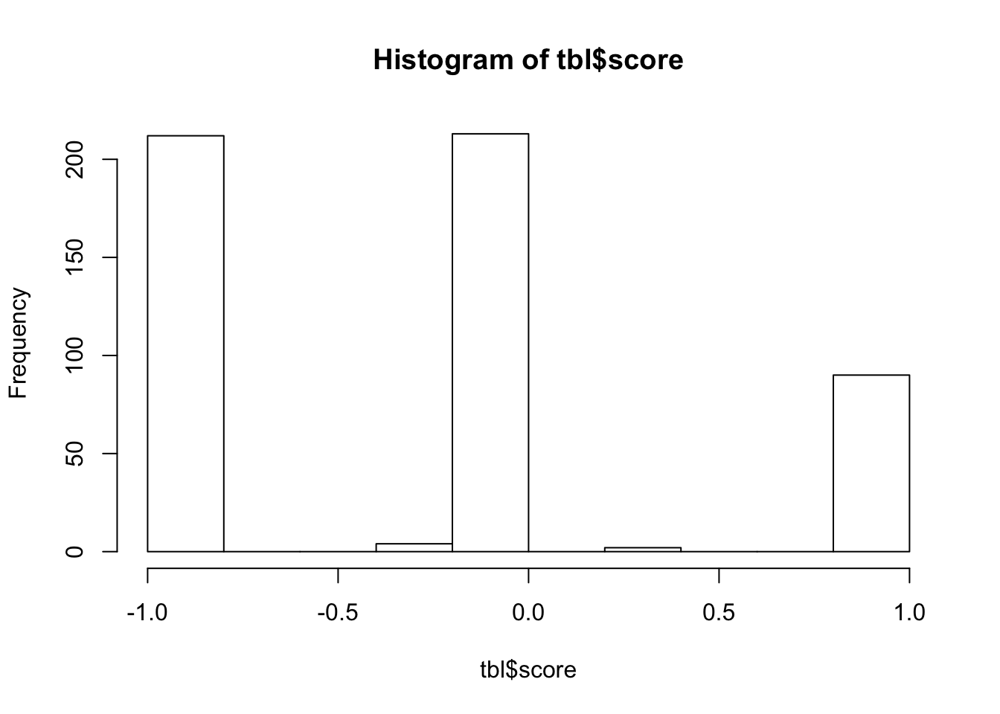
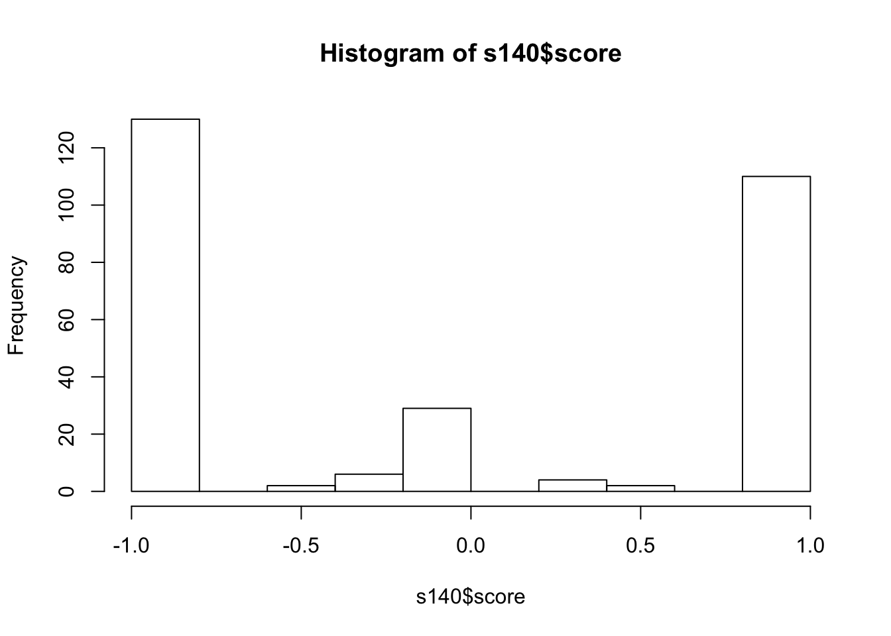
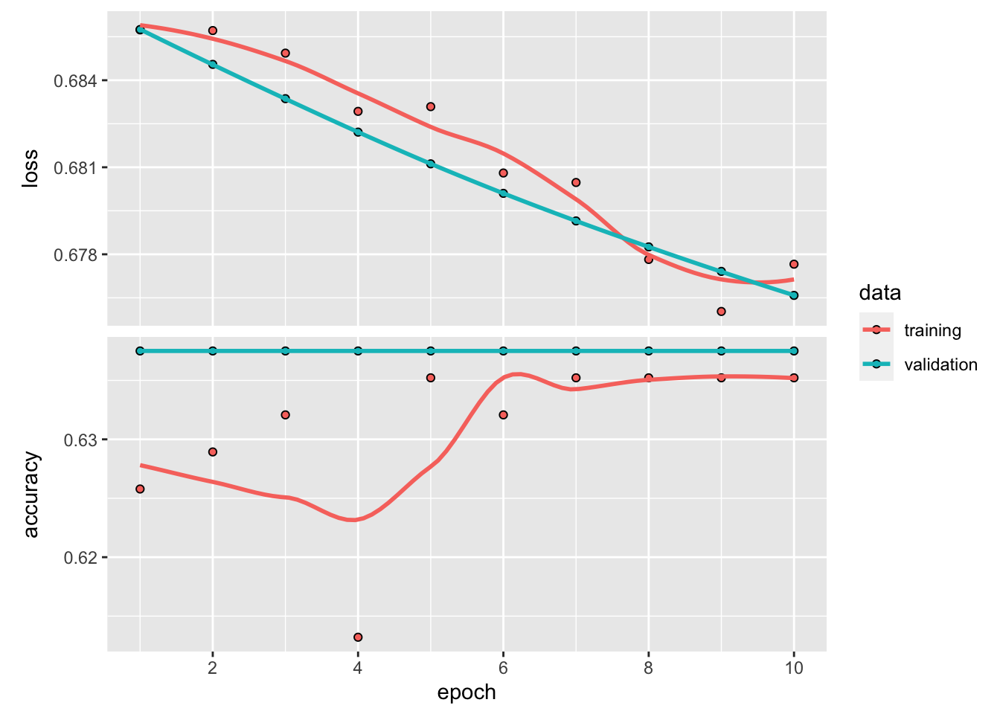

Lesson 2 Sentiment
STATUS: NOT READY
Sorry, this teaching module is not ready for students to run through just yet. I experienced a couple issues:
The free Twitter developer API access only goes back 1 week. I upgraded to Premium for the Full Archive search going back to Twitter beginnings in 2006, but couldn’t get the
rtweet::search_fullarchive()to return any results. I finally got a week’s worth of results with a more manual approach, _tweet-premium.R, but then became time constrained to get the rest.I wanted to use an existing trained model, i.e. “transfer learning”, to improve accuracy and not get into the weeds of convolutional neural net model design, but had trouble getting tfhub to work.
Objectives
Question
How has sentiment around air quality and clean energy changed since air became cleaner?
Background. In anticipation of the 2008 Summer Olympics in Beijing the Chinese government imposed strict rules to clean up the air. The people got used to better air and now Beijing is consistently improved. Will this hiatus to bad air be temporary or incite a push towards cleaner energy. For a compelling summary, check out the podcast The Natural Experiment - 99% Invisible.
Technical Motivation
Sentiment can be evaluated as either positive or negative. This binary classification is the most basic response for machine learning, thus a good example for a lesson on machine learning. Text however can have many complicated forms, such as negating terms (eg “happy” vs “not happy”), which makes it a good candidate for deep learning.
Approach
- Get a set of sample tweets before and after the lockdown with some of key terms.
- Lookup tweeted words with dictionaries labelling positive or negative, and tally the score. Bren’s own Casey O’Hara & Jessica Couture already explained this approach well in their Eco-Data-Science workshop Text analysis with R (2019-02-05).
- Introduce TensorFlow starting with a pre-trained model.
- Use a sample of the Sentiment140 twitter dataset to train an existing natural language processing (NLP) model.
- Predict that over time.
Prerequisites
A Twitter developer account is required to download tweets and access the https://developer.twitter.com/en/dashboard. You’ll need to apply via the Twitter developer signup.
I recieved an email for clarification and had the account approved and running by the end of the day.
2.1 Setup Twitter token
We’ll use the rtweet R package to get twitter data. You’ll need to setup an access token though after applying for a Twitter API
See Obtaining and using access tokens • rtweet:
- Creating a Twitter App
- Authorization methods
- Access token/secret method
Authorization in future R sessions
For search_fullarchive also tried to setup Dev environment — Twitter Developers, but that didn’t seem to work.
2.2 Load R packages
# load libraries ----
# use librarian to load libraries, installing if needed
if (!require("librarian")) install.packages("librarian")
library("librarian")
pkgs <- c(
# utility
"here","glue","stringr","dplyr","readr","ggplot2","purrr",
# airquality
#"ropensci/ropenaq",
# spatial
"sf",#"ggmap","mapview","leaflet",
# text
"rtweet","tidytext","textdata",
# tensorflow
"tensorflow","keras","tfhub","rstudio/tfds","pins")
shelf(pkgs)2.3 Search Twitter
Using hashtags from (Gurajala, Dhaniyala, and Matthews 2019): #AIRPOLLUTION #AIRQUALITY #CLEANAIR #HAZE #OZONE #PARTICLES #PARTICULATES #PM25 #PM2.5 #PM10 #POLLUTION #SMOG #EMISSIONS
city_geo <- here("data/city_Delhi-India.geojson")
now_rds <- here("data/twitter_aq_delhi_now.rds")
yr1_rds <- here("data/twitter_aq_delhi_1yr.rds")
aq_hashes <- c("#AIRPOLLUTION #AIRQUALITY #CLEANAIR #HAZE #OZONE #PARTICLES #PARTICULATES #PM25 #PM2.5 #PM10 #POLLUTION #SMOG #EMISSIONS") %>%
str_replace_all(" ", " OR ")
q_bb <- read_sf(city_geo) %>%
st_bbox() %>%
glue_data(
"bounding_box:[{xmin} {ymin} {xmax} {ymax}]")
geocode_str <- read_sf(city_geo) %>%
glue_data(
"{round(lat, 4)},{round(lon, 4)},{round(r_mi*2, 2)}mi")
q_geo <- read_sf(city_geo) %>%
glue_data(
"point_radius:[{round(lon, 4)} {round(lat, 4)} {round(r_mi*2, 2)}mi]")
if (!file.exists(now_rds)){
tbl <- search_tweets(
q = aq_hashes,
geocode = geocode_str,
n = 1000)
saveRDS(tbl, now_rds)
}
if (!file.exists(yr1_rds)){
#if (F){
tbl_yr1 <- search_fullarchive(
env_name = "research",
fromDate = "201905190000",
toDate = "201905260000",
q = glue("({aq_hashes}) {q_geo}"),
n = 1000)
saveRDS(tbl_yr1, yr1_rds)
}2.4 Calculate dictionary score
s_b <- get_sentiments('bing')
# s_a <- get_sentiments('afinn')
# s_n <- get_sentiments('nrc')
tbl <- readRDS(now_rds)
# clean out non-ascii, twitter handles, and urls
tbl <- tbl %>%
mutate(
text_clean = text %>%
str_replace_all("[^[:ascii:]]", "_") %>%
tolower() %>%
str_replace_all("@[^ ]+", "_usr_") %>%
str_replace_all("http[^ ]+", "_url_"))
# tweets to words
words <- tbl %>%
select(status_id, created_at, screen_name, text_clean) %>%
unnest_tokens(output = word, input = text_clean, token = "words") %>%
anti_join(stop_words, by = "word") %>%
left_join(s_b, by = "word") %>%
left_join(
tribble(
~sentiment, ~score,
"positive", 1,
"negative", -1),
by = "sentiment")
# tally score per tweet
tbl <- tbl %>%
left_join(
words %>%
group_by(status_id) %>%
summarize(
score = mean(score, na.rm = T)),
by = "status_id")
hist(tbl$score)
## [1] -0.2354447## [1] 6072.5 Twitter test dataset
For Academics - Sentiment140 - A Twitter Sentiment Analysis Tool
s140_csv <- here("data/sentiment140_testdata.manual.2009.06.14.csv")
s140 <- read_csv(
s140_csv, col_names = c(
"polarity", "status_id", "created_at", "query", "screen_name", "text")) %>%
mutate(
# convert negative 0 -> -1, neutral 2 -> 0, positive 4 -> 1
polarity = recode(polarity, `0` = -1, `2` = 0, `4` = 1))
# clean out non-ascii, twitter handles, and urls
s140 <- s140 %>%
mutate(
text_clean = text %>%
str_replace_all("[^[:ascii:]]", "_") %>%
tolower() %>%
str_replace_all("@[^ ]+", "_usr_") %>%
str_replace_all("http[^ ]+", "_url_"))
# tweets to words
words <- s140 %>%
select(status_id, created_at, screen_name, text_clean) %>%
unnest_tokens(output = word, input = text_clean, token = "words") %>%
anti_join(stop_words, by = "word") %>%
left_join(s_b, by = "word") %>%
left_join(
tribble(
~sentiment, ~score,
"positive", 1,
"negative", -1),
by = "sentiment")
# tally score per tweet
s140 <- s140 %>%
left_join(
words %>%
group_by(status_id) %>%
summarize(
score = mean(score, na.rm = T)),
by = "status_id")
hist(s140$score)
## [1] 498## [1] -0.07255595# performance
s140 <- s140 %>%
mutate(
accurate_dict = case_when(
polarity == -1 & score < 0 ~ T,
polarity == 0 & score == 0 ~ T,
polarity == 1 & score > 0 ~ T,
T ~ F))
select(s140, polarity, score, accurate_dict)## # A tibble: 498 x 3
## polarity score accurate_dict
## <dbl> <dbl> <lgl>
## 1 1 1 TRUE
## 2 1 1 TRUE
## 3 1 -1 FALSE
## 4 1 0 FALSE
## 5 1 1 TRUE
## 6 1 1 TRUE
## 7 -1 -1 TRUE
## 8 1 NaN FALSE
## 9 1 1 TRUE
## 10 1 1 TRUE
## # … with 488 more rows## [1] 0.39759042.6 Introducing TensorFlow
RStudio AI Blog: tfhub: R interface to TensorFlow Hub
You need to install these Python packages once:
tensorflow::install_tensorflow()
keras::install_keras()
tfhub::install_tfhub()
tfds::install_tfds()
reticulate::py_config()2.6.1 Text classification
The dataset was downloaded from Movie Reviews | Kaggle.
#df <- read_csv(here("data/movie_review.csv"))
df <- s140 %>%
mutate(
# convert negative -1 -> neg, neutral 0 -> neu, positive 1 -> pos
tag = recode(polarity, `-1` = "neg", `0` = "neu", `1` = "pos"))
df %>% count(tag)## # A tibble: 3 x 2
## tag n
## <chr> <int>
## 1 neg 177
## 2 neu 139
## 3 pos 182## [1] "@stellargirl I loooooooovvvvvveee my Kindle2. Not that the DX is cool, but the 2 is fantastic in its own right."# split our dataset into training and testing
training_id <- sample.int(nrow(df), size = nrow(df)*0.8)
training <- df[training_id,]
testing <- df[-training_id,]
# distribution of number of words in each review?
#df$text %>%
df$text_clean %>%
strsplit(" ") %>%
sapply(length) %>%
summary()## Min. 1st Qu. Median Mean 3rd Qu. Max.
## 2.00 8.00 12.00 13.73 18.75 31.00# create padded arrays
num_words <- 10000
max_length <- 50
text_vectorization <- layer_text_vectorization(
max_tokens = num_words,
output_sequence_length = max_length,)
text_vectorization %>%
#adapt(df$text)
adapt(df$text_clean)
# TODO see https://github.com/tensorflow/tensorflow/pull/34529
get_vocabulary(text_vectorization)## [1] "the"
## [2] "i"
## [3] "to"
## [4] "url"
## [5] "a"
## [6] "usr"
## [7] "is"
## [8] "and"
## [9] "for"
## [10] "my"
## [11] "at"
## [12] "of"
## [13] "in"
## [14] "it"
## [15] "with"
## [16] "time"
## [17] "you"
## [18] "just"
## [19] "on"
## [20] "night"
## [21] "new"
## [22] "have"
## [23] "so"
## [24] "good"
## [25] "was"
## [26] "warner"
## [27] "love"
## [28] "that"
## [29] "from"
## [30] "its"
## [31] "nike"
## [32] "museum"
## [33] "not"
## [34] "im"
## [35] "this"
## [36] "me"
## [37] "but"
## [38] "see"
## [39] "gm"
## [40] "about"
## [41] "got"
## [42] "be"
## [43] "safeway"
## [44] "out"
## [45] "lebron"
## [46] "kindle2"
## [47] "jquery"
## [48] "great"
## [49] "go"
## [50] "up"
## [51] "twitter"
## [52] "rt"
## [53] "more"
## [54] "hate"
## [55] "google"
## [56] "get"
## [57] "will"
## [58] "today"
## [59] "by"
## [60] "are"
## [61] "now"
## [62] "like"
## [63] "api"
## [64] "we"
## [65] "going"
## [66] "amp"
## [67] "your"
## [68] "dentist"
## [69] "back"
## [70] "all"
## [71] "they"
## [72] "than"
## [73] "really"
## [74] "day"
## [75] "best"
## [76] "awesome"
## [77] "atampt"
## [78] "stanford"
## [79] "obama"
## [80] "much"
## [81] "has"
## [82] "eating"
## [83] "as"
## [84] "2"
## [85] "still"
## [86] "one"
## [87] "malcolm"
## [88] "his"
## [89] "he"
## [90] "china"
## [91] "cable"
## [92] "want"
## [93] "there"
## [94] "or"
## [95] "only"
## [96] "no"
## [97] "latex"
## [98] "how"
## [99] "gladwell"
## [100] "down"
## [101] "do"
## [102] "cant"
## [103] "can"
## [104] "book"
## [105] "work"
## [106] "why"
## [107] "well"
## [108] "watching"
## [109] "using"
## [110] "u"
## [111] "too"
## [112] "san"
## [113] "lol"
## [114] "last"
## [115] "iphone"
## [116] "if"
## [117] "had"
## [118] "francisco"
## [119] "exam"
## [120] "damn"
## [121] "bobby"
## [122] "blog"
## [123] "an"
## [124] "what"
## [125] "warren"
## [126] "very"
## [127] "trek"
## [128] "star"
## [129] "some"
## [130] "never"
## [131] "may"
## [132] "internet"
## [133] "flay"
## [134] "come"
## [135] "am"
## [136] "aig"
## [137] "way"
## [138] "watch"
## [139] "us"
## [140] "reading"
## [141] "place"
## [142] "phone"
## [143] "oh"
## [144] "man"
## [145] "lakers"
## [146] "him"
## [147] "here"
## [148] "happy"
## [149] "guy"
## [150] "goodby"
## [151] "free"
## [152] "fail"
## [153] "ever"
## [154] "car"
## [155] "canon"
## [156] "buffet"
## [157] "again"
## [158] "after"
## [159] "yes"
## [160] "wish"
## [161] "went"
## [162] "weekend"
## [163] "top"
## [164] "thing"
## [165] "them"
## [166] "taking"
## [167] "sucks"
## [168] "speech"
## [169] "shit"
## [170] "saw"
## [171] "read"
## [172] "pretty"
## [173] "our"
## [174] "old"
## [175] "north"
## [176] "nice"
## [177] "next"
## [178] "need"
## [179] "mcdonalds"
## [180] "marketing"
## [181] "make"
## [182] "korea"
## [183] "iran"
## [184] "insects"
## [185] "home"
## [186] "g2"
## [187] "dont"
## [188] "dinner"
## [189] "d"
## [190] "could"
## [191] "baseball"
## [192] "world"
## [193] "white"
## [194] "where"
## [195] "viral"
## [196] "video"
## [197] "use"
## [198] "tonight"
## [199] "tomorrow"
## [200] "three"
## [201] "thanks"
## [202] "suck"
## [203] "stupid"
## [204] "seen"
## [205] "school"
## [206] "rock"
## [207] "right"
## [208] "ready"
## [209] "people"
## [210] "over"
## [211] "office"
## [212] "off"
## [213] "movie"
## [214] "lt3"
## [215] "looks"
## [216] "looking"
## [217] "learning"
## [218] "kobe"
## [219] "ive"
## [220] "itchy"
## [221] "hours"
## [222] "food"
## [223] "even"
## [224] "didnt"
## [225] "danny"
## [226] "class"
## [227] "big"
## [228] "being"
## [229] "before"
## [230] "any"
## [231] "amazing"
## [232] "50d"
## [233] "1"
## [234] "years"
## [235] "would"
## [236] "worst"
## [237] "wont"
## [238] "who"
## [239] "when"
## [240] "wave"
## [241] "wait"
## [242] "visa"
## [243] "ugh"
## [244] "tweets"
## [245] "trip"
## [246] "totally"
## [247] "those"
## [248] "think"
## [249] "thats"
## [250] "talk"
## [251] "take"
## [252] "support"
## [253] "super"
## [254] "soon"
## [255] "slogan"
## [256] "sleep"
## [257] "site"
## [258] "silverstein"
## [259] "seeing"
## [260] "sad"
## [261] "post"
## [262] "point"
## [263] "please"
## [264] "playing"
## [265] "palo"
## [266] "ok"
## [267] "movies"
## [268] "most"
## [269] "makes"
## [270] "loving"
## [271] "lot"
## [272] "look"
## [273] "long"
## [274] "life"
## [275] "javascript"
## [276] "ill"
## [277] "id"
## [278] "house"
## [279] "high"
## [280] "help"
## [281] "having"
## [282] "googleio"
## [283] "gonna"
## [284] "gokey"
## [285] "getting"
## [286] "funny"
## [287] "fun"
## [288] "fucking"
## [289] "found"
## [290] "feel"
## [291] "every"
## [292] "enjoy"
## [293] "east"
## [294] "does"
## [295] "did"
## [296] "dad"
## [297] "crazy"
## [298] "cool"
## [299] "comcast"
## [300] "cheney"
## [301] "call"
## [302] "bit"
## [303] "been"
## [304] "ass"
## [305] "app"
## [306] "american"
## [307] "alto"
## [308] "also"
## [309] "7"
## [310] "yay"
## [311] "wtf"
## [312] "worth"
## [313] "worked"
## [314] "warranty"
## [315] "united"
## [316] "ui"
## [317] "times"
## [318] "these"
## [319] "then"
## [320] "thank"
## [321] "text"
## [322] "stopped"
## [323] "stop"
## [324] "started"
## [325] "slow"
## [326] "sick"
## [327] "shows"
## [328] "should"
## [329] "shoreline"
## [330] "service"
## [331] "saying"
## [332] "same"
## [333] "said"
## [334] "safari"
## [335] "roger"
## [336] "review"
## [337] "recommend"
## [338] "real"
## [339] "quite"
## [340] "president"
## [341] "play"
## [342] "pills"
## [343] "pelosi"
## [344] "omg"
## [345] "obamas"
## [346] "notre"
## [347] "nothing"
## [348] "needs"
## [349] "ncaa"
## [350] "nba"
## [351] "money"
## [352] "monday"
## [353] "many"
## [354] "little"
## [355] "line"
## [356] "lets"
## [357] "later"
## [358] "lambda"
## [359] "know"
## [360] "kindle"
## [361] "jokes"
## [362] "joining"
## [363] "io2009"
## [364] "io"
## [365] "into"
## [366] "hi"
## [367] "hes"
## [368] "hd"
## [369] "hamilton"
## [370] "gum"
## [371] "guess"
## [372] "give"
## [373] "forever"
## [374] "first"
## [375] "find"
## [376] "few"
## [377] "federer"
## [378] "fast"
## [379] "excited"
## [380] "dx"
## [381] "date"
## [382] "dame"
## [383] "cute"
## [384] "customer"
## [385] "css"
## [386] "crap"
## [387] "commercial"
## [388] "code"
## [389] "check"
## [390] "case"
## [391] "cars"
## [392] "card"
## [393] "calculus"
## [394] "ca"
## [395] "buy"
## [396] "breakers"
## [397] "brand"
## [398] "bought"
## [399] "booz"
## [400] "blah"
## [401] "bill"
## [402] "better"
## [403] "because"
## [404] "bay"
## [405] "basketball"
## [406] "barack"
## [407] "bad"
## [408] "around"
## [409] "anyone"
## [410] "annoying"
## [411] "android"
## [412] "already"
## [413] "allen"
## [414] "adobe"
## [415] "40d"
## [416] "4"
## [417] "10"
## [418] "yet"
## [419] "yeah"
## [420] "wrong"
## [421] "working"
## [422] "word"
## [423] "wonder"
## [424] "wolfram"
## [425] "wo"
## [426] "win"
## [427] "whole"
## [428] "while"
## [429] "were"
## [430] "weka"
## [431] "web"
## [432] "water"
## [433] "watched"
## [434] "waste"
## [435] "warners"
## [436] "walking"
## [437] "w"
## [438] "vs"
## [439] "vote"
## [440] "voice"
## [441] "videos"
## [442] "via"
## [443] "upside"
## [444] "update"
## [445] "university"
## [446] "two"
## [447] "tv"
## [448] "turns"
## [449] "truly"
## [450] "tried"
## [451] "told"
## [452] "tips"
## [453] "tipping"
## [454] "timewarner"
## [455] "thought"
## [456] "things"
## [457] "their"
## [458] "tethering"
## [459] "tests"
## [460] "testing"
## [461] "tennis"
## [462] "ten"
## [463] "tell"
## [464] "tcot"
## [465] "surprised"
## [466] "summize"
## [467] "summer"
## [468] "suggestions"
## [469] "such"
## [470] "states"
## [471] "start"
## [472] "spent"
## [473] "soooo"
## [474] "sony"
## [475] "something"
## [476] "someone"
## [477] "social"
## [478] "slide"
## [479] "since"
## [480] "silversteins"
## [481] "side"
## [482] "shut"
## [483] "show"
## [484] "shitty"
## [485] "seriously"
## [486] "sent"
## [487] "sell"
## [488] "seems"
## [489] "season"
## [490] "searches"
## [491] "search"
## [492] "science"
## [493] "sb"
## [494] "says"
## [495] "say"
## [496] "sandbox"
## [497] "sale"
## [498] "running"
## [499] "rocks"
## [500] "rocked"
## [501] "regional"
## [502] "receipes"
## [503] "rather"
## [504] "radio"
## [505] "problems"
## [506] "probably"
## [507] "price"
## [508] "popular"
## [509] "playoffs"
## [510] "played"
## [511] "pissed"
## [512] "picking"
## [513] "picked"
## [514] "perfect"
## [515] "pay"
## [516] "partners"
## [517] "palin"
## [518] "pages"
## [519] "own"
## [520] "other"
## [521] "options"
## [522] "open"
## [523] "online"
## [524] "number"
## [525] "nuclear"
## [526] "normal"
## [527] "nobody"
## [528] "news"
## [529] "n"
## [530] "music"
## [531] "morning"
## [532] "mobile"
## [533] "miss"
## [534] "michael"
## [535] "mets"
## [536] "mean"
## [537] "math"
## [538] "making"
## [539] "made"
## [540] "lyx"
## [541] "loved"
## [542] "lots"
## [543] "lost"
## [544] "looked"
## [545] "listening"
## [546] "list"
## [547] "link"
## [548] "liked"
## [549] "less"
## [550] "kitchen"
## [551] "kids"
## [552] "junk"
## [553] "james"
## [554] "internets"
## [555] "interesting"
## [556] "instead"
## [557] "indian"
## [558] "indeed"
## [559] "idiot"
## [560] "idea"
## [561] "hurts"
## [562] "hungry"
## [563] "hummer"
## [564] "huge"
## [565] "hometown"
## [566] "history"
## [567] "highly"
## [568] "higher"
## [569] "hey"
## [570] "hero"
## [571] "her"
## [572] "hell"
## [573] "heck"
## [574] "heard"
## [575] "hahaha"
## [576] "guys"
## [577] "gtgt"
## [578] "glad"
## [579] "giving"
## [580] "given"
## [581] "girl"
## [582] "gets"
## [583] "g1"
## [584] "fuck"
## [585] "friend"
## [586] "friday"
## [587] "forward"
## [588] "fk"
## [589] "fix"
## [590] "fitness"
## [591] "fish"
## [592] "fieri"
## [593] "feed"
## [594] "favorite"
## [595] "fashion"
## [596] "far"
## [597] "fan"
## [598] "factory"
## [599] "experience"
## [600] "expensive"
## [601] "expects"
## [602] "everything"
## [603] "everyone"
## [604] "european"
## [605] "eos"
## [606] "enough"
## [607] "end"
## [608] "em"
## [609] "election"
## [610] "economy"
## [611] "eat"
## [612] "dvr"
## [613] "dum"
## [614] "dropped"
## [615] "draw"
## [616] "done"
## [617] "doing"
## [618] "doesnt"
## [619] "dislike"
## [620] "die"
## [621] "dick"
## [622] "devil"
## [623] "developer"
## [624] "days"
## [625] "d90"
## [626] "cut"
## [627] "cup"
## [628] "cs4"
## [629] "cox"
## [630] "coupons"
## [631] "couldnt"
## [632] "correspondents"
## [633] "conversation"
## [634] "contact"
## [635] "connection"
## [636] "conference"
## [637] "commercials"
## [638] "comes"
## [639] "column"
## [640] "cold"
## [641] "club"
## [642] "chrysler"
## [643] "ceo"
## [644] "cast"
## [645] "buzz"
## [646] "butt"
## [647] "business"
## [648] "bullshit"
## [649] "boy"
## [650] "boo"
## [651] "bio"
## [652] "believe"
## [653] "beast"
## [654] "battle"
## [655] "bank"
## [656] "b"
## [657] "available"
## [658] "atampts"
## [659] "appt"
## [660] "apps"
## [661] "ap"
## [662] "anything"
## [663] "anymore"
## [664] "announcment"
## [665] "amazon"
## [666] "although"
## [667] "alpha"
## [668] "ago"
## [669] "advice"
## [670] "ads"
## [671] "adidas"
## [672] "accident"
## [673] "access"
## [674] "absolutely"
## [675] "5"
## [676] "3d"
## [677] "3"
## [678] "2010"
## [679] "16"
## [680] "zydrunas"
## [681] "zoom"
## [682] "zomg"
## [683] "zero"
## [684] "zealots"
## [685] "yummmmmy"
## [686] "yuan"
## [687] "yr"
## [688] "youtube"
## [689] "youre"
## [690] "youll"
## [691] "york"
## [692] "yesterday"
## [693] "yema"
## [694] "yeezy"
## [695] "yeeeee"
## [696] "yearsgreat"
## [697] "yearly"
## [698] "year"
## [699] "yeahhhhhhhhh"
## [700] "yea"
## [701] "yankees"
## [702] "yahoo"
## [703] "ya"
## [704] "wysiwyg"
## [705] "wwwtinyurlcomm595fk"
## [706] "wwdc"
## [707] "wthi"
## [708] "wtfffff"
## [709] "writers"
## [710] "wrist"
## [711] "wrapper"
## [712] "wow"
## [713] "wouldnt"
## [714] "worse"
## [715] "words"
## [716] "woot"
## [717] "wondering"
## [718] "wonderful"
## [719] "won"
## [720] "wolverine"
## [721] "wolframalpha"
## [722] "without"
## [723] "wins"
## [724] "winners"
## [725] "winner"
## [726] "winer"
## [727] "windows"
## [728] "wilsons"
## [729] "williams"
## [730] "wikipedia"
## [731] "wieden"
## [732] "whose"
## [733] "whoopi"
## [734] "whoop"
## [735] "whoever"
## [736] "which"
## [737] "whenever"
## [738] "whats"
## [739] "wftb"
## [740] "werent"
## [741] "wells"
## [742] "weird"
## [743] "weight"
## [744] "week"
## [745] "wednesday"
## [746] "webdesign"
## [747] "webapp"
## [748] "wdsugm"
## [749] "wcdma"
## [750] "watchin"
## [751] "wat"
## [752] "waster"
## [753] "wasted"
## [754] "wasokaylol"
## [755] "wasnt"
## [756] "wants"
## [757] "wantit"
## [758] "waiting"
## [759] "vp"
## [760] "voiceover"
## [761] "vitamin"
## [762] "viralvideo"
## [763] "vios"
## [764] "viewunited"
## [765] "views"
## [766] "versus"
## [767] "version"
## [768] "verizon"
## [769] "vehicle"
## [770] "vastly"
## [771] "v"
## [772] "uverse"
## [773] "useless"
## [774] "upset"
## [775] "upgrade"
## [776] "updated"
## [777] "until"
## [778] "unprepared"
## [779] "unlimited"
## [780] "universitys"
## [781] "universal"
## [782] "unhelpful"
## [783] "unfortunate"
## [784] "unfold"
## [785] "unemployed"
## [786] "undo"
## [787] "understand"
## [788] "underestimated"
## [789] "under"
## [790] "ummm"
## [791] "ultimate"
## [792] "uk"
## [793] "ugly"
## [794] "uaw"
## [795] "typical"
## [796] "typeset"
## [797] "txt"
## [798] "twitters"
## [799] "twippin"
## [800] "twice"
## [801] "tw"
## [802] "turmoil"
## [803] "tuesday"
## [804] "ttiv"
## [805] "tsunami"
## [806] "try"
## [807] "true"
## [808] "troubleeeee"
## [809] "trouble"
## [810] "tricks"
## [811] "tricking"
## [812] "tribunals"
## [813] "trial"
## [814] "trend"
## [815] "tremens"
## [816] "tree"
## [817] "translator"
## [818] "training"
## [819] "trainer"
## [820] "track"
## [821] "toy"
## [822] "town"
## [823] "tour"
## [824] "torture"
## [825] "topics"
## [826] "tooth"
## [827] "tools"
## [828] "tool"
## [829] "took"
## [830] "tonite"
## [831] "tones"
## [832] "tommorow"
## [833] "tom"
## [834] "together"
## [835] "todays"
## [836] "tlot"
## [837] "tivo"
## [838] "tired"
## [839] "tip"
## [840] "timeout"
## [841] "til"
## [842] "tickets"
## [843] "ticker"
## [844] "tianjin"
## [845] "thursday"
## [846] "through"
## [847] "throttles"
## [848] "thread"
## [849] "though"
## [850] "thinks"
## [851] "thinking"
## [852] "theyre"
## [853] "texn3rds"
## [854] "test"
## [855] "terror"
## [856] "terrifying"
## [857] "tempted"
## [858] "tells"
## [859] "telling"
## [860] "technology"
## [861] "teal"
## [862] "teach"
## [863] "tea"
## [864] "tbh"
## [865] "taxes"
## [866] "tattoooos"
## [867] "tamasha"
## [868] "tall"
## [869] "talking"
## [870] "talent"
## [871] "tagging"
## [872] "taco"
## [873] "swithsonian"
## [874] "switch"
## [875] "sweet"
## [876] "svcs"
## [877] "susan"
## [878] "survive"
## [879] "survey"
## [880] "surgerywishing"
## [881] "supposed"
## [882] "supporting"
## [883] "superslow"
## [884] "supermarketing"
## [885] "sum"
## [886] "suggests"
## [887] "successful"
## [888] "submitted"
## [889] "style"
## [890] "stuff"
## [891] "studying"
## [892] "study"
## [893] "studing"
## [894] "students"
## [895] "strike"
## [896] "stormweight"
## [897] "stores"
## [898] "store"
## [899] "stocking"
## [900] "stock"
## [901] "stinkin"
## [902] "stimulus"
## [903] "stiller"
## [904] "stick"
## [905] "steep"
## [906] "stealing"
## [907] "staying"
## [908] "stay"
## [909] "starting"
## [910] "staples"
## [911] "stanfords"
## [912] "standing"
## [913] "stacy"
## [914] "stacks"
## [915] "srsly"
## [916] "spy"
## [917] "spx"
## [918] "spurs"
## [919] "spring"
## [920] "spot"
## [921] "sports"
## [922] "spinach"
## [923] "speak"
## [924] "south"
## [925] "source"
## [926] "sounds"
## [927] "soul"
## [928] "sorry"
## [929] "soooooo"
## [930] "sooo"
## [931] "son"
## [932] "sometimes"
## [933] "someones"
## [934] "solid"
## [935] "soldier"
## [936] "sold"
## [937] "socialentrepreneurship"
## [938] "snappy"
## [939] "snap"
## [940] "smh"
## [941] "smells"
## [942] "smart"
## [943] "small"
## [944] "slowlythey"
## [945] "slightest"
## [946] "slides"
## [947] "slave"
## [948] "slate"
## [949] "skin"
## [950] "situation"
## [951] "sitting"
## [952] "sittercity"
## [953] "sitcom"
## [954] "singapore"
## [955] "simmons"
## [956] "silversteinid"
## [957] "silver"
## [958] "signal"
## [959] "sign"
## [960] "siding"
## [961] "showing"
## [962] "shout"
## [963] "shouldve"
## [964] "shortterm"
## [965] "shorter"
## [966] "shopping"
## [967] "shoes"
## [968] "shits"
## [969] "shirts"
## [970] "ship"
## [971] "shes"
## [972] "sherri"
## [973] "sheet"
## [974] "sheer"
## [975] "she"
## [976] "shaunwoo"
## [977] "share"
## [978] "shanahans"
## [979] "shame"
## [980] "shade"
## [981] "session"
## [982] "servicethey"
## [983] "services"
## [984] "served"
## [985] "sens"
## [986] "sends"
## [987] "sending"
## [988] "send"
## [989] "selectors"
## [990] "select"
## [991] "seem"
## [992] "second"
## [993] "sdsu"
## [994] "screwed"
## [995] "screw"
## [996] "screen"
## [997] "screams"
## [998] "scratch"
## [999] "scrapbooking"
## [1000] "scientist"
## [1001] "schools"
## [1002] "schemers"
## [1003] "scary"
## [1004] "scarey"
## [1005] "scares"
## [1006] "scandal"
## [1007] "scams"
## [1008] "sayin"
## [1009] "saved"
## [1010] "save"
## [1011] "saturday"
## [1012] "satisfying"
## [1013] "sashimi"
## [1014] "sarah"
## [1015] "sampt"
## [1016] "ryan"
## [1017] "runner"
## [1018] "roomies"
## [1019] "room"
## [1020] "roll"
## [1021] "rocawear"
## [1022] "robin"
## [1023] "road"
## [1024] "risotto"
## [1025] "ride"
## [1026] "riddance"
## [1027] "rid"
## [1028] "richest"
## [1029] "rich"
## [1030] "rhino"
## [1031] "revision"
## [1032] "reuters"
## [1033] "retiring"
## [1034] "resume"
## [1035] "resultsby"
## [1036] "results"
## [1037] "result"
## [1038] "restaurant"
## [1039] "resold"
## [1040] "researchers"
## [1041] "research"
## [1042] "request"
## [1043] "republican"
## [1044] "republic"
## [1045] "reps"
## [1046] "repeatedly"
## [1047] "remote"
## [1048] "remorse"
## [1049] "relief"
## [1050] "release"
## [1051] "related"
## [1052] "regular"
## [1053] "regret"
## [1054] "regionals"
## [1055] "reference"
## [1056] "recovering"
## [1057] "recorder"
## [1058] "recorded"
## [1059] "recentlyreleased"
## [1060] "recently"
## [1061] "receivers"
## [1062] "reasonable"
## [1063] "realizing"
## [1064] "realized"
## [1065] "realize"
## [1066] "reader"
## [1067] "rating"
## [1068] "raped"
## [1069] "rantsandraves"
## [1070] "rank"
## [1071] "rams"
## [1072] "rampr"
## [1073] "rajeev"
## [1074] "rachel"
## [1075] "r"
## [1076] "quesadilla"
## [1077] "quality"
## [1078] "quaint"
## [1079] "python"
## [1080] "pyt"
## [1081] "putting"
## [1082] "put"
## [1083] "puppet"
## [1084] "pulls"
## [1085] "public"
## [1086] "psyop"
## [1087] "prs500"
## [1088] "provided"
## [1089] "proudly"
## [1090] "prospects"
## [1091] "pros"
## [1092] "propre"
## [1093] "promotions"
## [1094] "programs"
## [1095] "programming"
## [1096] "programme"
## [1097] "program"
## [1098] "profits"
## [1099] "profit"
## [1100] "profiles"
## [1101] "profile"
## [1102] "prof"
## [1103] "prob"
## [1104] "private"
## [1105] "primary"
## [1106] "prettiest"
## [1107] "pretenses"
## [1108] "pretenious"
## [1109] "presser"
## [1110] "prepare"
## [1111] "premium"
## [1112] "prefer"
## [1113] "prayers"
## [1114] "powerful"
## [1115] "powell"
## [1116] "posted"
## [1117] "possibly"
## [1118] "possible"
## [1119] "portland"
## [1120] "porn"
## [1121] "popularity"
## [1122] "ponzi"
## [1123] "politics"
## [1124] "pointing"
## [1125] "pockets"
## [1126] "pm"
## [1127] "plugin"
## [1128] "plug"
## [1129] "pls"
## [1130] "pleasant"
## [1131] "players"
## [1132] "platinum"
## [1133] "platform"
## [1134] "planted"
## [1135] "plant"
## [1136] "plans"
## [1137] "planning"
## [1138] "plane"
## [1139] "plan"
## [1140] "places"
## [1141] "pink"
## [1142] "pictures"
## [1143] "pics"
## [1144] "picks"
## [1145] "pic"
## [1146] "piano"
## [1147] "physics"
## [1148] "physical"
## [1149] "php"
## [1150] "photos"
## [1151] "photography"
## [1152] "phoneughh"
## [1153] "phones"
## [1154] "phoenix"
## [1155] "phillies"
## [1156] "philip"
## [1157] "phil"
## [1158] "pg"
## [1159] "pet"
## [1160] "personalityhe"
## [1161] "person"
## [1162] "period"
## [1163] "perhaps"
## [1164] "peppers"
## [1165] "peoples"
## [1166] "pending"
## [1167] "pastrami"
## [1168] "party"
## [1169] "partner"
## [1170] "part"
## [1171] "park"
## [1172] "palm"
## [1173] "pair"
## [1174] "pain"
## [1175] "p2"
## [1176] "p"
## [1177] "owns"
## [1178] "owned"
## [1179] "ovation"
## [1180] "outta"
## [1181] "outs"
## [1182] "outliers"
## [1183] "outlet"
## [1184] "oughta"
## [1185] "opting"
## [1186] "operators"
## [1187] "opensourced"
## [1188] "oooooooh"
## [1189] "ooooh"
## [1190] "onstar"
## [1191] "onsite"
## [1192] "omgg"
## [1193] "oldie"
## [1194] "okay"
## [1195] "ohhdee"
## [1196] "official"
## [1197] "offering"
## [1198] "offense"
## [1199] "obviously"
## [1200] "obsession"
## [1201] "obsessed"
## [1202] "obamapelosi"
## [1203] "obamabidenpelosi"
## [1204] "o3d"
## [1205] "o2"
## [1206] "o"
## [1207] "ny"
## [1208] "nvidia"
## [1209] "nuts"
## [1210] "nuggetssss"
## [1211] "nuggets"
## [1212] "np"
## [1213] "noticed"
## [1214] "note"
## [1215] "normally"
## [1216] "nor"
## [1217] "nooooooo"
## [1218] "nonprofits"
## [1219] "non"
## [1220] "nin"
## [1221] "nikon"
## [1222] "nikes"
## [1223] "nightmare"
## [1224] "niggas"
## [1225] "nicer"
## [1226] "nic"
## [1227] "newswow"
## [1228] "newedge"
## [1229] "network"
## [1230] "net"
## [1231] "nerdy"
## [1232] "nerd"
## [1233] "nelson"
## [1234] "needed"
## [1235] "neal"
## [1236] "ncis"
## [1237] "nbccom"
## [1238] "natural"
## [1239] "nations"
## [1240] "nationalization"
## [1241] "nap"
## [1242] "nancy"
## [1243] "names"
## [1244] "named"
## [1245] "name"
## [1246] "naive"
## [1247] "nails"
## [1248] "myself"
## [1249] "myfoxdc"
## [1250] "mustang"
## [1251] "must"
## [1252] "murdering"
## [1253] "muppet"
## [1254] "mtvcom"
## [1255] "msgs"
## [1256] "mr"
## [1257] "moving"
## [1258] "movieit"
## [1259] "move"
## [1260] "mountain"
## [1261] "motwani"
## [1262] "motors"
## [1263] "mostvaluablepuppets"
## [1264] "mosquito"
## [1265] "montreal"
## [1266] "months"
## [1267] "month"
## [1268] "monsta"
## [1269] "monkeys"
## [1270] "modems"
## [1271] "model"
## [1272] "mmmmmfamily"
## [1273] "mmmkatz"
## [1274] "mluc09"
## [1275] "mkii"
## [1276] "mistake"
## [1277] "missed"
## [1278] "miserable"
## [1279] "minutes"
## [1280] "mins"
## [1281] "mine"
## [1282] "milrockee"
## [1283] "military"
## [1284] "might"
## [1285] "midcontract"
## [1286] "met"
## [1287] "messengers"
## [1288] "mesa"
## [1289] "merceds"
## [1290] "mentor"
## [1291] "mentioned"
## [1292] "memorial"
## [1293] "members"
## [1294] "melo"
## [1295] "meeting"
## [1296] "meet"
## [1297] "media"
## [1298] "meat"
## [1299] "means"
## [1300] "meal"
## [1301] "mba"
## [1302] "maybe"
## [1303] "mathematics"
## [1304] "mate"
## [1305] "marvin"
## [1306] "martinez"
## [1307] "marry"
## [1308] "market"
## [1309] "map"
## [1310] "mandelas"
## [1311] "major"
## [1312] "magazines"
## [1313] "mac"
## [1314] "lunch"
## [1315] "luke"
## [1316] "lucky"
## [1317] "low"
## [1318] "lovin"
## [1319] "loves"
## [1320] "lounging"
## [1321] "loooooooovvvvvveee"
## [1322] "loooong"
## [1323] "lookin"
## [1324] "loo"
## [1325] "logo"
## [1326] "location"
## [1327] "loan"
## [1328] "load"
## [1329] "lmao"
## [1330] "lived"
## [1331] "live"
## [1332] "literally"
## [1333] "linux"
## [1334] "lines"
## [1335] "limitations"
## [1336] "limit"
## [1337] "light"
## [1338] "lift"
## [1339] "lifes"
## [1340] "lied"
## [1341] "lhu"
## [1342] "lewis"
## [1343] "lens"
## [1344] "lehman"
## [1345] "left"
## [1346] "lee"
## [1347] "led"
## [1348] "lebronsht"
## [1349] "league"
## [1350] "leading"
## [1351] "lead"
## [1352] "le"
## [1353] "layoffs"
## [1354] "lawson"
## [1355] "lawnmowing"
## [1356] "launched"
## [1357] "latest"
## [1358] "late"
## [1359] "landed"
## [1360] "lambert"
## [1361] "lam"
## [1362] "laker"
## [1363] "ladies"
## [1364] "lack"
## [1365] "kong"
## [1366] "klunky"
## [1367] "kinda"
## [1368] "kill"
## [1369] "kicks"
## [1370] "kick"
## [1371] "khakipink"
## [1372] "keynote"
## [1373] "key"
## [1374] "kennedy"
## [1375] "kendra"
## [1376] "katydids"
## [1377] "katie"
## [1378] "kathleen"
## [1379] "karizmakaze"
## [1380] "kaplan"
## [1381] "judd"
## [1382] "jqueryspokenforjs"
## [1383] "join"
## [1384] "jobs"
## [1385] "jetsim"
## [1386] "jenna"
## [1387] "java"
## [1388] "janelle"
## [1389] "jakes"
## [1390] "jacked"
## [1391] "itwill"
## [1392] "itunes"
## [1393] "isnt"
## [1394] "iranelection"
## [1395] "irancraziness"
## [1396] "ir"
## [1397] "invite"
## [1398] "investors"
## [1399] "investing"
## [1400] "investigation"
## [1401] "invested"
## [1402] "invented"
## [1403] "intersport"
## [1404] "interface"
## [1405] "instantly"
## [1406] "install"
## [1407] "inspired"
## [1408] "insightfilled"
## [1409] "inside"
## [1410] "insane"
## [1411] "innovation"
## [1412] "inkscape"
## [1413] "informative"
## [1414] "information"
## [1415] "infected"
## [1416] "inevitable"
## [1417] "indias"
## [1418] "india"
## [1419] "indesign"
## [1420] "incredibly"
## [1421] "including"
## [1422] "improvement"
## [1423] "impressed"
## [1424] "implode"
## [1425] "implement"
## [1426] "impatiently"
## [1427] "imgsearch"
## [1428] "ima"
## [1429] "iii"
## [1430] "idol"
## [1431] "idiots"
## [1432] "icecream"
## [1433] "hurt"
## [1434] "hurricane"
## [1435] "human"
## [1436] "huh"
## [1437] "hubby"
## [1438] "html"
## [1439] "hr"
## [1440] "hq"
## [1441] "hp"
## [1442] "howards"
## [1443] "howard"
## [1444] "hour"
## [1445] "hotel"
## [1446] "host"
## [1447] "horde"
## [1448] "hope"
## [1449] "honor"
## [1450] "hong"
## [1451] "honda"
## [1452] "homepowell"
## [1453] "homegrown"
## [1454] "holiday"
## [1455] "holders"
## [1456] "hmm"
## [1457] "hitting"
## [1458] "hitler"
## [1459] "hit"
## [1460] "hints"
## [1461] "himself"
## [1462] "hills"
## [1463] "hill"
## [1464] "hilariouslmao"
## [1465] "hilarious"
## [1466] "highspeed"
## [1467] "highlights"
## [1468] "highlight"
## [1469] "hideous"
## [1470] "hhrs"
## [1471] "heres"
## [1472] "hempz"
## [1473] "helpful"
## [1474] "hello"
## [1475] "hear"
## [1476] "healthy"
## [1477] "heads"
## [1478] "heading"
## [1479] "head"
## [1480] "havent"
## [1481] "hates"
## [1482] "haten"
## [1483] "harvard"
## [1484] "hardly"
## [1485] "hard"
## [1486] "harassed"
## [1487] "happens"
## [1488] "handout"
## [1489] "half"
## [1490] "hair"
## [1491] "haha"
## [1492] "hacking"
## [1493] "hack"
## [1494] "gym"
## [1495] "gwt"
## [1496] "gut"
## [1497] "guitar"
## [1498] "guessjust"
## [1499] "guantanamo"
## [1500] "gtlt"
## [1501] "gta"
## [1502] "gsb"
## [1503] "grr"
## [1504] "grocery"
## [1505] "grill"
## [1506] "green"
## [1507] "greater"
## [1508] "grateful"
## [1509] "graphics"
## [1510] "graduate"
## [1511] "gps"
## [1512] "govt"
## [1513] "governments"
## [1514] "government"
## [1515] "gouged"
## [1516] "gotta"
## [1517] "gop"
## [1518] "goooood"
## [1519] "googles"
## [1520] "goodie"
## [1521] "gone"
## [1522] "goddam"
## [1523] "gmchevy"
## [1524] "gladwells"
## [1525] "girlfriend"
## [1526] "giggling"
## [1527] "gift"
## [1528] "giants"
## [1529] "genius"
## [1530] "generation"
## [1531] "generate"
## [1532] "general"
## [1533] "geldof"
## [1534] "geekiness"
## [1535] "gave"
## [1536] "game"
## [1537] "g2s"
## [1538] "fuzzball"
## [1539] "furkin"
## [1540] "furious"
## [1541] "funfun"
## [1542] "funding"
## [1543] "functional"
## [1544] "fuin"
## [1545] "fucker"
## [1546] "fucked"
## [1547] "frustrating"
## [1548] "friggin"
## [1549] "fridge"
## [1550] "fricken"
## [1551] "french"
## [1552] "fred"
## [1553] "freaky"
## [1554] "freaking"
## [1555] "freakin"
## [1556] "fortune"
## [1557] "forced"
## [1558] "font"
## [1559] "following"
## [1560] "follow"
## [1561] "focus"
## [1562] "fml"
## [1563] "flywire"
## [1564] "flockofseagullsweregeopoliticallycorrect"
## [1565] "flight"
## [1566] "flies"
## [1567] "five"
## [1568] "firmly"
## [1569] "fireside"
## [1570] "finished"
## [1571] "finewhat"
## [1572] "financial"
## [1573] "finals"
## [1574] "finally"
## [1575] "filter"
## [1576] "files"
## [1577] "file"
## [1578] "fighting"
## [1579] "fifa"
## [1580] "field"
## [1581] "festival"
## [1582] "fest"
## [1583] "fees"
## [1584] "feels"
## [1585] "fed"
## [1586] "features"
## [1587] "feature"
## [1588] "fcking"
## [1589] "fck"
## [1590] "fb"
## [1591] "fav"
## [1592] "fault"
## [1593] "fantastic"
## [1594] "family"
## [1595] "fake"
## [1596] "fair"
## [1597] "facebooks"
## [1598] "facebook"
## [1599] "face"
## [1600] "fabulous"
## [1601] "f"
## [1602] "eye"
## [1603] "extracted"
## [1604] "extra"
## [1605] "expression"
## [1606] "explode"
## [1607] "explain"
## [1608] "expires"
## [1609] "expectations"
## [1610] "execs"
## [1611] "except"
## [1612] "examples"
## [1613] "evr"
## [1614] "everyday"
## [1615] "evening"
## [1616] "ethics"
## [1617] "et"
## [1618] "essay"
## [1619] "esquire"
## [1620] "espnjus"
## [1621] "espn"
## [1622] "esf"
## [1623] "ereader"
## [1624] "epic"
## [1625] "environment"
## [1626] "enuf"
## [1627] "entry"
## [1628] "enjoyable"
## [1629] "enhancing"
## [1630] "engine"
## [1631] "en"
## [1632] "empty"
## [1633] "employees"
## [1634] "emails"
## [1635] "elkhorn"
## [1636] "electronic"
## [1637] "electron"
## [1638] "eh"
## [1639] "eggs"
## [1640] "effing"
## [1641] "effects"
## [1642] "editor"
## [1643] "editing"
## [1644] "eagle"
## [1645] "ea"
## [1646] "dwight"
## [1647] "during"
## [1648] "duo"
## [1649] "dunk"
## [1650] "dump"
## [1651] "dumber"
## [1652] "dude"
## [1653] "dslreports"
## [1654] "dslr"
## [1655] "drying"
## [1656] "drove"
## [1657] "drop"
## [1658] "driving"
## [1659] "drive"
## [1660] "drinking"
## [1661] "drink"
## [1662] "drdentistscary"
## [1663] "downloading"
## [1664] "douglas"
## [1665] "douchebaggery"
## [1666] "dot"
## [1667] "doom"
## [1668] "dood"
## [1669] "docs"
## [1670] "dnc"
## [1671] "dm"
## [1672] "division"
## [1673] "dissapointed"
## [1674] "disruptionfred"
## [1675] "dishonest"
## [1676] "discomort"
## [1677] "disaster"
## [1678] "dime"
## [1679] "different"
## [1680] "dies"
## [1681] "died"
## [1682] "devsnippets"
## [1683] "device"
## [1684] "development"
## [1685] "develop"
## [1686] "destroy"
## [1687] "desperation"
## [1688] "desire"
## [1689] "depressed"
## [1690] "dentistwho"
## [1691] "dentists"
## [1692] "demos"
## [1693] "delirium"
## [1694] "deleting"
## [1695] "degrees"
## [1696] "definitely"
## [1697] "default"
## [1698] "deep"
## [1699] "decided"
## [1700] "debt"
## [1701] "debit"
## [1702] "debates"
## [1703] "death"
## [1704] "dearest"
## [1705] "dear"
## [1706] "deal"
## [1707] "deadlines"
## [1708] "dead"
## [1709] "dbags"
## [1710] "daybankrupt"
## [1711] "david"
## [1712] "dave"
## [1713] "data"
## [1714] "dan"
## [1715] "dally"
## [1716] "cuz"
## [1717] "custom"
## [1718] "curve"
## [1719] "curses"
## [1720] "current"
## [1721] "curl"
## [1722] "cunt"
## [1723] "culprits"
## [1724] "csfullerton"
## [1725] "cs"
## [1726] "crush"
## [1727] "crippe"
## [1728] "creates"
## [1729] "created"
## [1730] "create"
## [1731] "crashing"
## [1732] "crappy"
## [1733] "cracka"
## [1734] "course"
## [1735] "coupon"
## [1736] "county"
## [1737] "country"
## [1738] "countries"
## [1739] "coordinates"
## [1740] "cookbook"
## [1741] "cook"
## [1742] "coo"
## [1743] "continue"
## [1744] "continual"
## [1745] "contactsdoes"
## [1746] "conservatism"
## [1747] "consequences"
## [1748] "connections"
## [1749] "confirmed"
## [1750] "conducted"
## [1751] "concord"
## [1752] "computer"
## [1753] "components"
## [1754] "completely"
## [1755] "complete"
## [1756] "complaining"
## [1757] "compared"
## [1758] "commerical"
## [1759] "comment"
## [1760] "commencement"
## [1761] "coming"
## [1762] "comedian"
## [1763] "com"
## [1764] "colorway"
## [1765] "college"
## [1766] "collapse"
## [1767] "collaboration"
## [1768] "colin"
## [1769] "coda"
## [1770] "cocacola"
## [1771] "cnn"
## [1772] "closer"
## [1773] "closely"
## [1774] "close"
## [1775] "clinton"
## [1776] "climate"
## [1777] "clients"
## [1778] "classification"
## [1779] "classic"
## [1780] "civil"
## [1781] "city"
## [1782] "citi"
## [1783] "church"
## [1784] "chose"
## [1785] "chips"
## [1786] "childs"
## [1787] "child"
## [1788] "chief"
## [1789] "chickfila"
## [1790] "chicken"
## [1791] "cheneys"
## [1792] "cheering"
## [1793] "checked"
## [1794] "cheat"
## [1795] "cheaper"
## [1796] "cheap"
## [1797] "chattanoogas"
## [1798] "chat"
## [1799] "chartvisualization"
## [1800] "chart"
## [1801] "charity"
## [1802] "charade"
## [1803] "character"
## [1804] "channels"
## [1805] "changing"
## [1806] "changed"
## [1807] "cell"
## [1808] "cease"
## [1809] "cbs"
## [1810] "cavs"
## [1811] "causin"
## [1812] "cause"
## [1813] "catch"
## [1814] "cash"
## [1815] "cartons"
## [1816] "carmelo"
## [1817] "care"
## [1818] "cardinals"
## [1819] "cannot"
## [1820] "campaign"
## [1821] "camera"
## [1822] "came"
## [1823] "calls"
## [1824] "calling"
## [1825] "called"
## [1826] "cali"
## [1827] "calcio1"
## [1828] "cake"
## [1829] "cadillac"
## [1830] "c"
## [1831] "bye"
## [1832] "byalex"
## [1833] "buys"
## [1834] "bush"
## [1835] "burning"
## [1836] "burn"
## [1837] "burger"
## [1838] "bunch"
## [1839] "bumming"
## [1840] "bummer"
## [1841] "building"
## [1842] "buildin"
## [1843] "bug"
## [1844] "buffett"
## [1845] "buffets"
## [1846] "buffering"
## [1847] "bud"
## [1848] "btw"
## [1849] "bt"
## [1850] "brush"
## [1851] "browser"
## [1852] "broken"
## [1853] "broccoli"
## [1854] "brings"
## [1855] "bringing"
## [1856] "breakfast"
## [1857] "break"
## [1858] "branding"
## [1859] "braindead"
## [1860] "brad"
## [1861] "boys"
## [1862] "boyle"
## [1863] "boyfriend"
## [1864] "bout"
## [1865] "bottled"
## [1866] "boss"
## [1867] "boring"
## [1868] "bored"
## [1869] "boots"
## [1870] "boortz"
## [1871] "books"
## [1872] "bonuses"
## [1873] "bonjour"
## [1874] "bob"
## [1875] "boarding"
## [1876] "board"
## [1877] "blows"
## [1878] "blow"
## [1879] "bloomingdale"
## [1880] "blood"
## [1881] "blocked"
## [1882] "blip"
## [1883] "blink"
## [1884] "blech"
## [1885] "blazer"
## [1886] "black"
## [1887] "bitter"
## [1888] "bitten"
## [1889] "bitin"
## [1890] "bitch"
## [1891] "bird"
## [1892] "bipart"
## [1893] "biology"
## [1894] "binhai"
## [1895] "bing"
## [1896] "billups"
## [1897] "billions"
## [1898] "bike"
## [1899] "beyond"
## [1900] "beta"
## [1901] "ben"
## [1902] "bell"
## [1903] "beijing"
## [1904] "beginning"
## [1905] "bedroom"
## [1906] "bed"
## [1907] "became"
## [1908] "beautiful"
## [1909] "bball"
## [1910] "bayes"
## [1911] "bathroom"
## [1912] "bastards"
## [1913] "baseballamericacom"
## [1914] "barrie"
## [1915] "barraged"
## [1916] "barbara"
## [1917] "bankruptcy"
## [1918] "banana"
## [1919] "balls"
## [1920] "ball"
## [1921] "bailout"
## [1922] "ba"
## [1923] "aww"
## [1924] "awful"
## [1925] "away"
## [1926] "award"
## [1927] "awake"
## [1928] "awaiting"
## [1929] "avoided"
## [1930] "authors"
## [1931] "auntie"
## [1932] "audiobook"
## [1933] "att"
## [1934] "atil"
## [1935] "athlete"
## [1936] "atebits"
## [1937] "ate"
## [1938] "assholes"
## [1939] "assesment"
## [1940] "asses"
## [1941] "asked"
## [1942] "ask"
## [1943] "article"
## [1944] "arrrgh"
## [1945] "arrival"
## [1946] "arhh"
## [1947] "argghhhh"
## [1948] "arg"
## [1949] "arent"
## [1950] "area"
## [1951] "arabs"
## [1952] "arab"
## [1953] "aprs"
## [1954] "appreciate"
## [1955] "appointment"
## [1956] "applied"
## [1957] "apple"
## [1958] "appearance"
## [1959] "appear"
## [1960] "apologies"
## [1961] "apatow"
## [1962] "apartment"
## [1963] "apart"
## [1964] "anyways"
## [1965] "antiabortion"
## [1966] "answers"
## [1967] "another"
## [1968] "announcement"
## [1969] "animations"
## [1970] "angry"
## [1971] "amphitheatre"
## [1972] "ampehfav9fhg"
## [1973] "amount"
## [1974] "among"
## [1975] "america"
## [1976] "always"
## [1977] "alot"
## [1978] "alone"
## [1979] "almost"
## [1980] "allstar"
## [1981] "ala"
## [1982] "al"
## [1983] "ajaxjquery"
## [1984] "ajax"
## [1985] "air"
## [1986] "aint"
## [1987] "ahhh"
## [1988] "ahhgot"
## [1989] "ahh"
## [1990] "ahead"
## [1991] "aha"
## [1992] "ah"
## [1993] "agency"
## [1994] "afternoon"
## [1995] "africa"
## [1996] "aerospace"
## [1997] "advance"
## [1998] "admissions"
## [1999] "administration"
## [2000] "addictive"
## [2001] "addiction"
## [2002] "add"
## [2003] "adam"
## [2004] "ad"
## [2005] "actually"
## [2006] "across"
## [2007] "acia"
## [2008] "aching"
## [2009] "acg"
## [2010] "account"
## [2011] "accosts"
## [2012] "according"
## [2013] "above"
## [2014] "aapl"
## [2015] "911"
## [2016] "900mhz"
## [2017] "84"
## [2018] "82"
## [2019] "710"
## [2020] "700"
## [2021] "6pm"
## [2022] "6"
## [2023] "5d"
## [2024] "56"
## [2025] "53"
## [2026] "50dits"
## [2027] "50cal"
## [2028] "499"
## [2029] "45"
## [2030] "40k"
## [2031] "40d50d"
## [2032] "3rd"
## [2033] "3gs"
## [2034] "300"
## [2035] "30"
## [2036] "2pm"
## [2037] "2moro"
## [2038] "2k9"
## [2039] "2hr"
## [2040] "2daymosquitos"
## [2041] "299"
## [2042] "24"
## [2043] "229"
## [2044] "2012"
## [2045] "20092010"
## [2046] "200"
## [2047] "1st"
## [2048] "1988"
## [2049] "1785mm"
## [2050] "16209"
## [2051] "15mp"
## [2052] "13"
## [2053] "1200"
## [2054] "12"
## [2055] "10000"
## [2056] "1000"
## [2057] "100"## tf.Tensor(
## [[ 1 3 1322 11 47 34 29 2 381 8 299 38 2 85
## 8 1594 14 31 520 208 0 0 0 0 0 0 0 0
## 0 0 0 0 0 0 0 0 0 0 0 0 0 0
## 0 0 0 0 0 0 0 0]], shape=(1, 50), dtype=int64)input <- layer_input(shape = c(1), dtype = "string")
output <- input %>%
text_vectorization() %>%
layer_embedding(input_dim = num_words + 1, output_dim = 16) %>%
layer_global_average_pooling_1d() %>%
layer_dense(units = 16, activation = "relu") %>%
layer_dropout(0.5) %>%
layer_dense(units = 1, activation = "sigmoid")
model <- keras_model(input, output)
# configure the model to use an optimizer and a loss function
model %>% compile(
optimizer = 'adam',
loss = 'binary_crossentropy',
metrics = list('accuracy'))
# train the model
history <- model %>% fit(
training$text,
as.numeric(training$tag == "pos"),
epochs = 10,
batch_size = 512,
validation_split = 0.2,
verbose=2)
# evaluate the model
results <- model %>% evaluate(testing$text, as.numeric(testing$tag == "pos"), verbose = 0)
results## loss accuracy
## 0.6876795 0.6000000
## loss accuracy
## 0.6876795 0.60000002.6.2 not working on Ben’s laptop: trained model on image classification
library(tfhub)
library(keras)
layer_mobilenet <- layer_hub(
handle = "https://tfhub.dev/google/tf2-preview/mobilenet_v2/classification/4")
input <- layer_input(shape = c(224, 224, 3))
output <- layer_mobilenet(input)
model <- keras_model(input, output)
summary(model)The layer_hub() function above however kept throwing errors like this:
Error in py_call_impl(callable, dots$args, dots$keywords) :
OSError: SavedModel file does not exist at: /var/folders/2r/grqvdjfn04361tzk8mh60st40000gn/T/tfhub_modules/426589ad685896ab7954855255a52db3442cb38d/{saved_model.pbtxt|saved_model.pb}There’s a lot of Python and R communication that can get easily confused between versions. So let’s switch to a clean installation by using Docker. Install Docker if you don’t already have it.
Then per rocker/tensorflow - Docker Hub run the following to get a clean RStudio instance with all the TensorFlow and Python dependencies properly installed:
Visit http://localhost:8787/ and enter username rstudio, password mu.
Then in the Terminal of RStudio run:
git clone https://github.com/bbest/meds-demoimg <- image_load("data/grace-hopper.jpg", target_size = c(224,224)) %>%
image_to_array()
img <- img/255
dim(img) <- c(1, dim(img))
pred <- predict(model, img)
imagenet_decode_predictions(pred[,-1,drop=FALSE])[[1]]Gorelick, Noel, Matt Hancher, Mike Dixon, Simon Ilyushchenko, David Thau, and Rebecca Moore. 2017. “Google Earth Engine: Planetary-Scale Geospatial Analysis for Everyone.” Remote Sensing of Environment, Big Remotely Sensed Data: Tools, applications and experiences, 202 (December): 18–27. https://doi.org/10.1016/j.rse.2017.06.031.
Gurajala, Supraja, Suresh Dhaniyala, and Jeanna N. Matthews. 2019. “Understanding Public Response to Air Quality Using Tweet Analysis.” Social Media + Society 5 (3). SAGE Publications Ltd: 2056305119867656. https://doi.org/10.1177/2056305119867656.
References
Gurajala, Supraja, Suresh Dhaniyala, and Jeanna N. Matthews. 2019. “Understanding Public Response to Air Quality Using Tweet Analysis.” Social Media + Society 5 (3). SAGE Publications Ltd: 2056305119867656. https://doi.org/10.1177/2056305119867656.